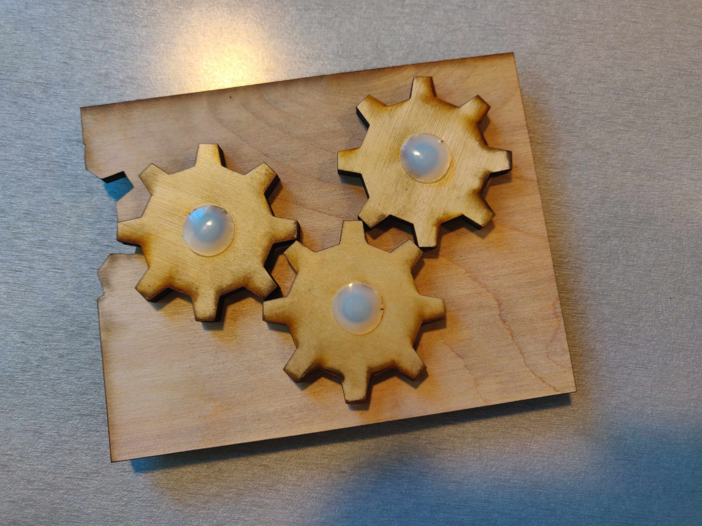

Check out my three little gears

Here is all the documentation for assignment 4!
gears working file.ai
Onshape link
Photo documentation:

Process
I started off by revolving a peg-like shape around a circle in Illustrator to form a gear shape. I moved it to Onshape to test it out. I made final changes in Illustrator before printing with a laser printer. My first print had enormous holes because I had mistakenly made the holes bigger in Onshape after it wouldn't let me use the fastener in the way I wanted. My second print did not quite work the way I wanted because the gears weren't close enough:
Close to final attempt:
I redesigned the background piece to move the gears closer together. Alas, the gears still weren't quite working:
Final:
Lessons Learned:
- Measure holes ahead of time. I had measured the holes correctly initially and then had a hard time fitting them in Onshape, so I made them bigger. Then I printed on acrylic the first time (dumb) and the holes were way too big.
- Illustrator is better for spacing out holes correctly.
- Make gear pegs fatter so they'll work correctly.
Acknowlegements: Thank you to Klare for her help with Onshape! And to Joshua for the very helpful lecture.